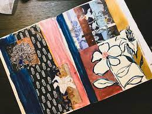

Carnets Artisanaux
Pour vous organiser, vous détendre, égayer votre quotidien, ou simplement garder une trace de vos moments inoubliables, vous trouverez à l'atelier votre prochain agenda, album photos, bullet journal, carnet d’aquarelle, de croquis, de notes, ou de partition.
